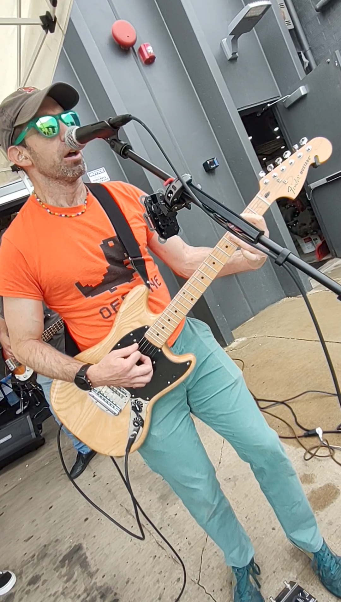
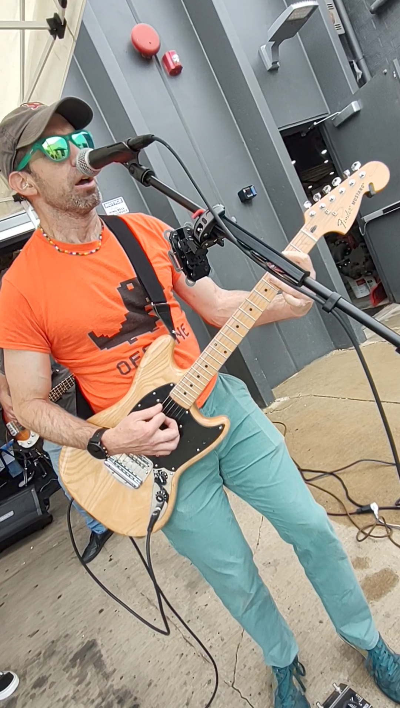

Nick Feamster
University of Chicago
I am the Neubauer Professor of Computer Science in the Department of Computer Science and a Founding Director of the Center for Data and Computing. My research focuses on applications of machine learning to network security and performance. I am a Fellow of the Association for Computing Machinery (ACM), placing me in the top 1% of all professionals in computer science.
I have extensive experience as an expert witness, as both a consulting and testifying expert with deposition and federal trial testimony experience in software patent, copyright, trade secrets, and privacy law. I have experience with patent monetization and defense, including litigation and trial experience as well as IPR proceedings. I have testified in federal court multiple times in several cases that reached favorable verdicts. Expertise includes: AI models, machine learning, copyright, access control, anomaly detection, distributed systems, and video technologies (streaming and codecs), and software defined networking.
I was the first software engineer at LookSmart, a directory-based Internet search engine later bought by AltaVista. My work on Internet codecs and streaming protocols in the late 1990s led to one of the first streaming video systems to transmit live television over the Internet. In the 2000s, I invented technologies that became the basis of AI-driven network security, and (separately) that led to the development of Software Defined Networking (SDN).
My work has been adopted by industry and led to several startup companies. I am one of the Top 20 most cited researchers in Computer Networking and, with Andrew Tanenbaum, have co-authored one of the most popular networking textbooks in the world.
At Georgia Tech, I was a founding instructor in what is now the largest online Computer Science MS degree program in the world, generating over 10% of the new MSCS degrees awarded in the US annually.
In 2008, I received the Presidential Early Career Award for Scientists and Engineers (PECASE) for my contributions to cybersecurity. My other honors include the Technology Review 35 "Top Young Innovators Under 35" award, a Sloan Research Fellowship, the NSF CAREER award, and award papers at SIGCOMM, NSDI, and USENIX Security.
I am an avid distance runner, having completed more than 20 marathons, including Boston, New York, and Chicago, as well as the Comrades Marathon, an iconic ultra-marathon in South Africa. I live in Chicago, Illinois.